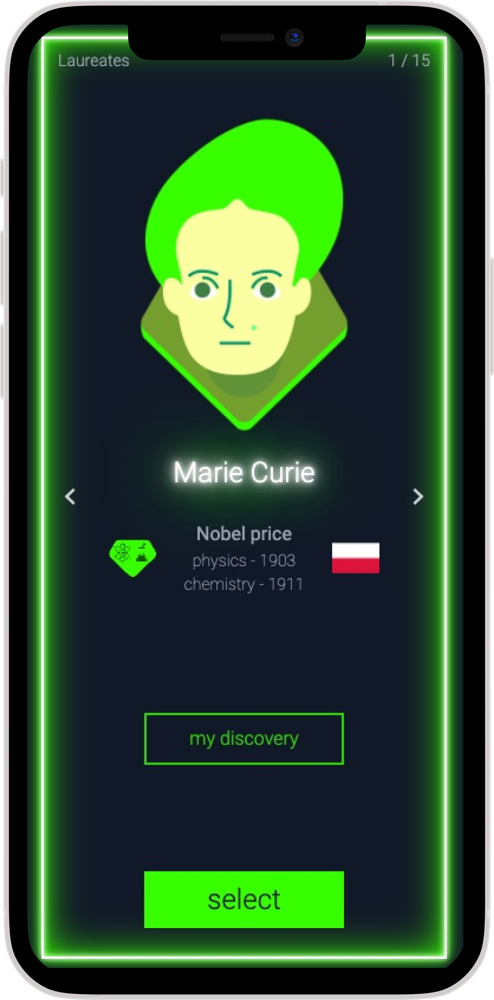
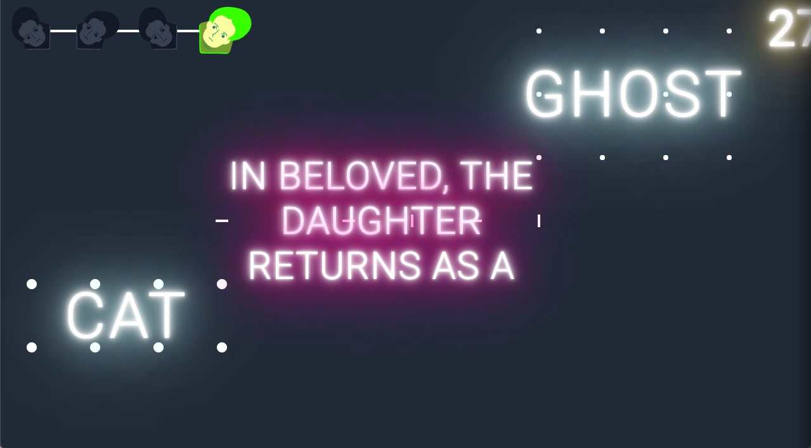

cyber|glow at Kulturnatt is an interactive software art installation. It is presented as an audiovisual dyptich. .
The cyber|glow diptych.

The first part of cyber|glow is a multiplayer interactive game. The audience plays the game with their phone and learn about the history of the Résidence de France. While the audience plays, cyber|glow traces all the operations that make the game work: messages between the audience's phones and the game server, as well as all the digital activity inside the game.

The second part of cyber|glow's dyptich is an audiovisual digital art piece that is generated, in real-time, based on the digital activity produced by the audience. Mesmerizing images and ambient electronice sounds reveal ultra-high frequency digital processes that run the game. This generative software art installation lets the audience make sense of digital activities through their emotions.
Software is the core medium that fuels our digital society, providing services to citizens,
governments, activists and corporations. It is an invisible and intangible set of processes that run
millions of operations per second, on top of world-wide networks. With cyber|glow, we wish to unveil
these invisible processes and let citizens realize the extraordinary scale of software that
surrounds them.
The zoomed out laser view shows the three core part of the infrastructure of this installation: the
users' devices in the bottom right, the web server instance in the top and the computer in charge of
the visuals in the bottom left.
Zooming in on the top middle circle revealse a laser visualisation of what is going on inside the web
server: files being loaded, events being passed on, state being changed and queries to the database.
When the installation zooms in on the bottom right, events created by the user will be visualised,
either as a text message displaying the particular action, or as a red dot representing the
activation of an action.
The bottom left position shows the internal low level system activity of the computer creating the
visuals for the game and for the laser: errors reported, requests to the operating system to access
the hardware and mechanisms to harness inputs to create truly random cryptographically secure
numbers.
Credits
cyber|glow was designed and developed by the
rethread.art collective: Erik Natanael Gustafsson, Thomas
Durieux, Jonathan Ramirez Mendoza, and Benoit
Baudry. For cyber|glow at Kulturnatt, the re|thread collective features Séverine Feuermann advising about the history and art at the Résidence de France.